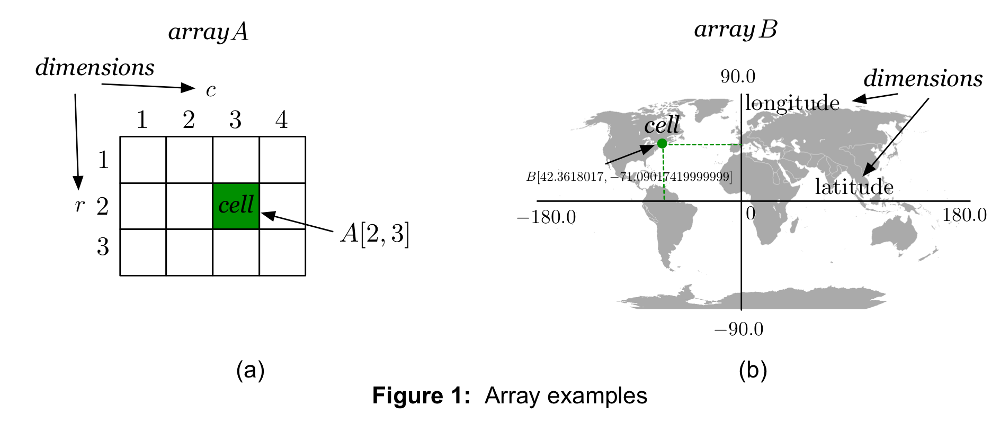

TileDB is a storage management system for data that are naturally represented as multi-dimensional arrays. An array in TileDB can be thought of as a multi-dimensional space, oriented by axes called dimensions. An array contains multi-dimensional objects, called cells. Each dimension has a name and a domain. Moreover, all dimensions have a common type, which can be one of the following: int32, int64, float32, float64. Each cell is an object defined uniquely by a set of dimension domain values, called coordinates.
Figure 1 illustrates two examples, focusing on 2 dimensions, without loss of generality. Figure 1(a) depicts a \(3\times 4\) matrix \(A\), which is defined exactly as in Linera Algebra, i.e., it has 3 rows and 4 columns, and the indices start from the upper left corner. It has 2 dimensions, \(r\) for the rows and \(c\) for the columns. Dimension \(r\) has domain \([1,3]\), whereas \(c\) has domain \([1,4]\). We suppose that all indices in these domains are represented as int32 values. A cell is an element of this matrix, i.e., it is defined by a unique pair \((i,j)\) of indices within the dimension domains, such as \(A[2,3]\).
TileDB goes beyond Linear Algebra matrices. The flexibility of TileDB in storing multi-dimensional data is illustrated in Figure 1(b), which depicts our geographic coordinate system. This can be represented by an array \(B\) with 2 dimensions, longitude and latitude. The domain of each dimension contains real numbers; it is \([-90.0, 90.0]\) for longitude and \([-180.0, 180.0]\) for latitude. We represent the type of both domains as float64. A cell is essentially a 2-dimensional point in this space, determined by a unique pair of float64 longitude and latitute values. For instance, \(B[42.3618017, -71.09017419999999]\) is the cell corresponding to the MIT Stata building. Note that the order of the dimensions in TileDB is important: in the TileDB world, for any 2D example, the first dimension corresponds to the vertical axis, and the second to the horizontal. In other words, TileDB follows the Linear Algebra matrix orientation. TileDB can very efficiently store cells with real coordinates, exactly because of its ability to handle immensely sparse arrays, such as this example. The reason will be clear soon. Finally, note that both the above examples easily generalize to an arbitrary number of dimensions.
We next overview the cell internals. As explained above, a cell is determined by a unique set of coordinates. But what does each cell store? In TileDB, a cell is a tuple with a particular schema (defined by the user when creating the array). All cells in a given array follow the same schema. The schema specifies the cell attributes, namely the name of each attribute and the type of the attribute values. TileDB supports the following types for the cell attributes: char, int32, int64, float32, float64.
In addition, TileDB supports storing multiple values per attribute. For instance, if the user specifies an attribute to have type int32:3, then this means that the cell stores exactly 3 integers on that attribute (e.g., the cell may be a pixel of an image, storing the three RGB integer values in its 'color' attribute). Moreover, TileDB supports storing a variable number of values per attribute. For example, if the user specifies char:var as the type of an attribute, then a cell can store any arbitrary string in that attribute (e.g., the cell may represent a geotagged tweet from Twitter, and store its text as a large string in its 'message' attribute). The :var keyword works with all the supported types. Note that these basic types, in combination with the ability to store arbitrary number of values per attribute, give enormous flexibility to the user to store arbitrarily complex information inside a cell. Especially the char:var type can be thought of as a sequence of bytes, which can be used to store any arbitrary user-defined data object, given appropriate wrappers for serialization/deserialization of this object to/from bytes.